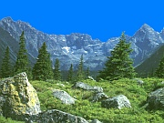

Tatry
Tatry są górami wznoszącymi się na granicy Polski i Słowacji. Są to góry reprezentujące krajobraz wysokogórski typu alpejskiego. Całe Tatry zajmują obszar 795km kwadratowych, przy czym na Tatry Polskie przypada 185km kwadratowych, a pozostała część leży na terytorium Słowacji. Tatry dzielą się na 4 części: Tatry Bielskie(Hawrań 2152m), Tatry Zachodnie(Bystra 2248m), Tatry Wysokie(Gerlach 2655m), oraz masyw Siwego Wierchu 1806m. Na terytorium Polski leży jedynie częśc Tatr Wysokich i część Tatr Zachodnich. Najwyższym szczytem w polskich Tatrach Wysokich są położone na granicy Rysy 2499m, a w Tatrach Zachodnich Starorobociański Wierch 2176m. Natomiast najwyższym szczytem położonym w całości w Polsce jest Kozi Wierch 2291m. Tatry Bielskie zbudowane są ze skał wapiennych. Od granitowych Tatr Wysokich oddzielone są Przełęczą pod Kopą. Tatry Wysokie są najwyższe i charakteryzują się najbardziej efektowną rzeźbą skalną. Na zachód od Przełęczy Lliowe rozciągają się natomiast najrozleglejsze Tatry Zachodnie, których rzeżba jest jednak zdecydowanie łagodniejsza. Bardzo charakterystycznym elementem krajobrazu tatrzańskiego jest obfitośc wód. Do największych atrakcji należą oczywiście przepiękne, tatrzańskie stawy ślicznie wkomponowane w skalną scenerię. Największe i najpiękniejsze z nich leżą po polskiej stronie. Najgłębszy(79m) jest Wielki Staw położony w Dolinie 5-ciu Stawów Polskich. Nie dorównuje on jednak urokiem Morskiemu Oku, najbardziej znanemu z tatrzańskich jezior,które polożone jest u stóp Mięguszowieckich Szczytów. Po stronie słowackiej największy i najgłębszy jest Wielki Staw Hińczowy, zaś najwyżej położony jest Staw Lodowy(2157m).Bardzo efektowne są również tatrzańskie wodospady, z których największym jest Wielka Siklawa. Ma ona około 70 metrów wysokości i spada z progu o średnim nachyleniu 35 stopni. Innym ciekawym zjawiskiem są także ogromne wywierzyska związane z podziemnymi przepływami. Najpotężniejsze z nich -Wywierzysko Olczyskie -wyrzuca okolo 400-700 litrów wody na sekundę. Oprócz tego w Tatrach znajduje się kilkadziesiąt większych potoków. W Tatrach obok wspaniałych, wysokogórskich krajobrazów, pięknych jezior, urokliwych dolin, możemy spotkać także bardzo bogatą szatę roślinną. Do wysokości 1000m sięga piętro podgórza. Nad nim wyróżnia się 2 piętra lasów: dolnoreglowe(1200-1250m), oraz górnoreglowe(do 1550m). Piętro górnoreglowe tworzą m.in. brzoza karpacka, jarzębina i limba. Powyżej (do 1800m) znajduje się piętro kosodrzewiny, a nad nią rozciąga siępiętro hal, sięgające nawet do 2300m. Ostatnim piętrem jest natomiast piętro turniowe. Dużą atrakcję stanowi także fauna tatrzańska. Obok pospolitych gatunków zwierząt takich jak: jelenie, sarny, dziki, wilki, żbiki, w Tatrach żyją także kozice, świstaki,a przede wszystkim niedźwiedzie.Tatry ze względu na wyjątkowe wartości przyrodnicze i krajobrazowe podlegają ochronie. Całe Tatry Polskie wchodzą w skład Tatrzańskiego Parku Narodowego. Po stronie słowackiej istnieje natomiast TANAP (Tatransky narodny park).
Najwyższy szczyt: GerlachWysokość: 2665 m.n.p.m.